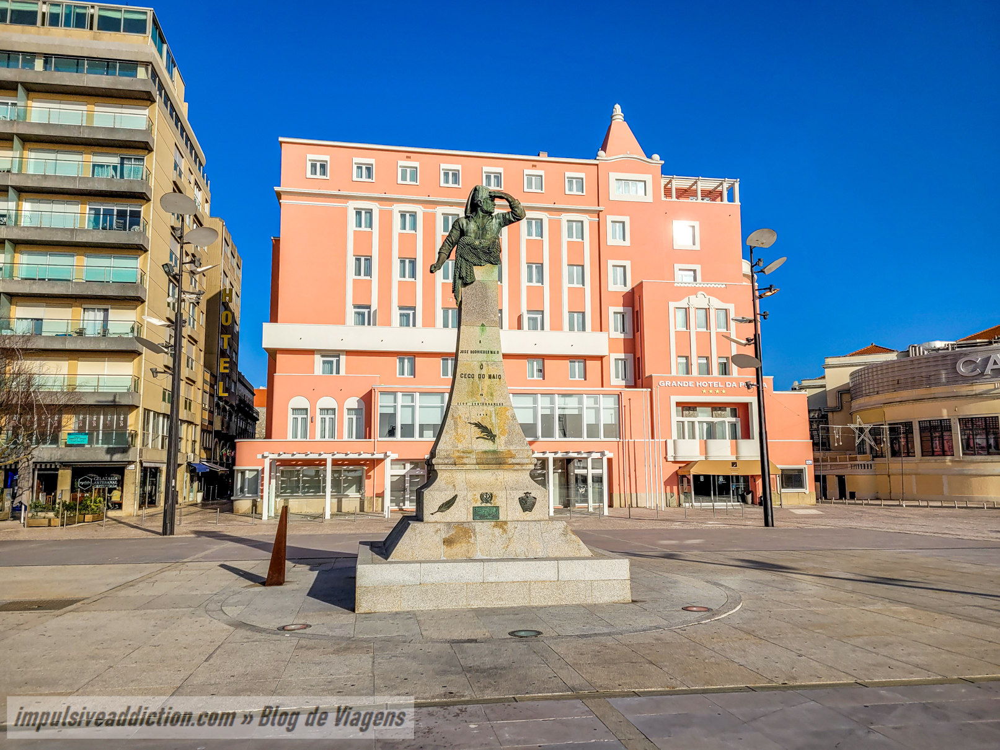

Monumentos e Atrações Turísticas da Póvoa de Varzim
Aquedutos
Estruturas históricas que representam a engenharia e o design antigos da Póvoa de Varzim.
Ver mais

Estádio da Póvoa
O principal centro esportivo da Póvoa de Varzim, palco de importantes eventos locais.
Ver mais
Praça do Almada
Um dos espaços urbanos mais vibrantes e centrais da cidade, com significativa história cultural.
Ver maisTourada
Atração controversa, mas profundamente enraizada nas tradições locais da Póvoa de Varzim.
Ver mais